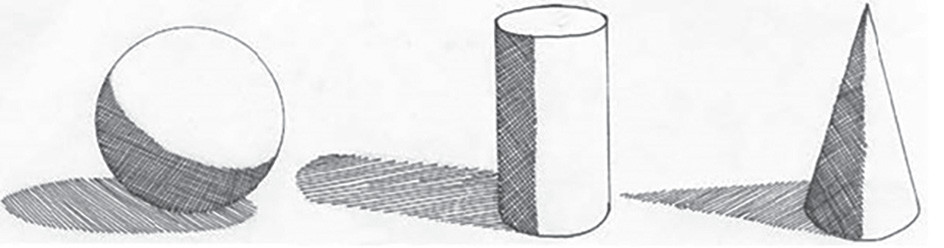

Vivuli
Vivuli katika picha huonesha upande ambao mwanga hutokea. Aidha, vivuli hutumika kuonesha kwamba vitu vilivyochorwa vipo juu ya uso wa kitu fulani. Vivuli pia hutumika kutenganisha kati ya umbo moja na lingine katika picha. Kielelezo namba 20 kinaonesha picha zenye vivuli vinavyoonesha upande ambao mwanga unatokea.

Mizania
Mizania ni hali ambayo uzito wa kitu unasambazwa sawa kwa pande zote ili kitu hicho kiweze kuwa na utulivu. Uzito huu unaweza kuwa ule tunaojihisi tunapobeba kitu au uzito tunaouona kwa macho. Katika uchoraji ni uzito unaohisiwa kwa kuona. Picha inahitaji kuwa na mizania, kwani bila hiyo inaweza kumfanya mtazamaji ahisi ukosefu wa usawa na utulivu. Kwa mfano, Kielelezo namba 21 kinaonesha picha isiyokuwa na mizania, ambapo mchoraji ameweka vitu vingi, yaani mti, jiwe, kilima upande wa kushoto na hivyo kuifanya ionekane kuegemea upande huo wa kushoto.